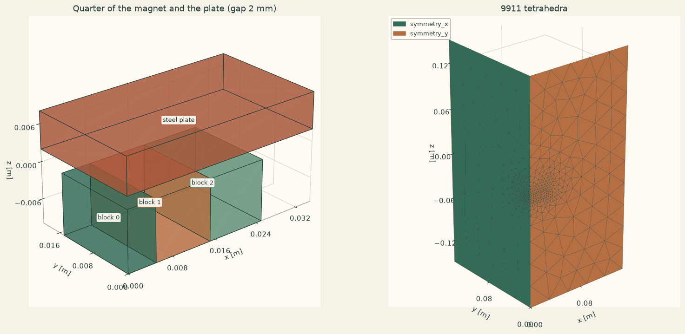

Docs › Examples › One-sided Halbach magnet attracting a steel plate
Magnetostatics · 3D
One-sided Halbach magnet attracting a steel plate
Five NdFeB blocks with turning magnetization concentrate their flux on one side and pull on a steel plate.
Run locally with OneSimulation. The example downloads are free. Running them requires an activated runtime. Runtime Alpha 0.2.1a7 · CPython 3.13 on macOS (Apple Silicon), Ubuntu 22.04 (x86-64), and Windows x64. Installation and activation · View pilot plans. Scope of the reference checks.

What it computes
OneSimulation reads one quarter of the magnet blocks, the steel plate at three air gaps and the air from STEP files, embeds them in one tetrahedral mesh and solves the vector potential with second-order Nedelec elements, the remanence entering as a magnetization load. The pull on the plate is the Maxwell stress integrated over planes in the air gap. The script that builds the STEP file comes with the notebook.
What it checks
Without the plate the field 2 mm from the row follows the closed-form field of magnetized blocks (strong-side peak 666 mT against 672 mT, weak side 247 mT against 242 mT); the pull is 502, 347 and 174 N at 1, 2 and 4 mm, the two stress planes agree within 0.5 %, two meshes within 0.11 %, and the force decays as exp(-0.35 g/mm) against exp(-0.31 g/mm) for the infinite array.
Geometry
The notebook starts at the import of the CAD files halbach_magnet_steel_plate_force.step, halbach_magnet_steel_plate_force_block_0.step, halbach_magnet_steel_plate_force_block_1.step, halbach_magnet_steel_plate_force_block_2.step, halbach_magnet_steel_plate_force_plate_1mm.step, halbach_magnet_steel_plate_force_plate_2mm.step, halbach_magnet_steel_plate_force_plate_4mm.step: STEP (AP242), readable by any CAD program, with the names of the faces that the boundary conditions use. Put them next to the notebook.

The geometry script
The script halbach_magnet_steel_plate_force_geometry.py builds the geometry with the CAD objects of OneSimulation and writes the files. Change a dimension there, run it, and run the notebook again.
"""Geometry of the OneSimulation example "One-sided Halbach magnet attracting a steel plate".
Builds one quarter of a one-sided magnet and a steel plate with the CAD objects of OneSimulation.
The magnet is a row of five blocks, 10 mm x 30 mm x 10 mm each, whose magnetization turns by a
quarter turn from block to block (a Halbach array); the steel plate, 70 mm x 40 mm x 6 mm, lies
parallel to its top face. The quarter x > 0, y > 0 is cut by the two symmetry planes.
Files: halbach_magnet_steel_plate_force.step holds the air box (the modelled region) with the face
groups symmetry_x, symmetry_y and outer; halbach_magnet_steel_plate_force_block_0.step to _block_2.step
hold the quarter of the middle block and the two blocks beside it; _plate_1mm.step, _plate_2mm.step
and _plate_4mm.step hold the plate at an air gap of 1, 2 and 4 mm.
"""
from onesim.cad.d3 import Box
block, width, plate_length, plate_width, plate_thickness, air = (
0.010,
0.030,
0.070,
0.040,
0.006,
0.150,
)
region = Box(length=air, width=air, height=2 * air, origin=(0.0, 0.0, -air))
faces = region.boundaries
region = region.grouped(
symmetry_x=faces.x_min,
symmetry_y=faces.y_min,
outer=faces.x_max | faces.y_max | faces.z_min | faces.z_max,
)
region.save("halbach_magnet_steel_plate_force.step")
for index, (start, length) in enumerate(
((0.0, block / 2), (block / 2, block), (3 * block / 2, block))
):
Box(length=length, width=width / 2, height=block, origin=(start, 0.0, -block)).save(
f"halbach_magnet_steel_plate_force_block_{index}.step"
)
for gap in (1, 2, 4):
Box(
length=plate_length / 2,
width=plate_width / 2,
height=plate_thickness,
origin=(0.0, 0.0, gap * 1e-3),
).save(f"halbach_magnet_steel_plate_force_plate_{gap}mm.step")The notebook
The complete notebook, cell by cell. Run it to produce the figures and the comparison printout.
A one-sided magnet has both of its poles on the same side, so that its flux leaves through one face only; fridge magnets and magnetic grippers work this way. The classic design is the Halbach array: a row of blocks whose magnetization turns by a quarter turn from block to block. Here five NdFeB blocks (\(B_r=1.2\) T, recoil permeability taken as 1), each 10 mm long, 30 mm wide and 10 mm high, are magnetized in the sequence →, ↑, ←, ↓, →. The field adds up above the row and nearly cancels below it.
A steel plate (70 mm × 40 mm × 6 mm, \(\mu_r=1000\), saturation not modelled) lies above the strong side at an air gap \(g\) of 1, 2 or 4 mm. With no free currents and the magnetization \(\mathbf M=\mathbf B_r/\mu_0\) in \(\mathbf B=\mu(\mathbf H+\mathbf M)\), OneSimulation solves \(\nabla\times(\mu^{-1}\nabla\times\mathbf A)=\nabla\times\mathbf M\) with second-order Nédélec elements. The force on the plate is the Maxwell stress integrated over a plane in the air gap,
One quarter is modelled. The air box comes from halbach_magnet_steel_plate_force.step with the face groups symmetry_x, symmetry_y and outer; the quarter blocks from halbach_magnet_steel_plate_force_block_0.step to _block_2.step and the plate at the three gaps from _plate_1mm.step, _plate_2mm.step and _plate_4mm.step. The script halbach_magnet_steel_plate_force_geometry.py builds them with the CAD objects of OneSimulation.
| faces | condition | |---|---| | symmetry_x, the plane through the middle block | field normal, \(\mathbf n\times\mathbf H=0\) | | symmetry_y, the plane along the row | field tangential, \(\mathbf n\times\mathbf A=0\) | | outer, 15 cm from the magnet | \(\mathbf n\times\mathbf A=0\) |
Reference. Without the plate the field is that of five uniformly magnetized blocks, the closed form of the field of charged faces (E. P. Furlani, Permanent Magnet and Electromechanical Devices, 2001, Sec. 4.3). For the force there is no closed form; the stress is evaluated on two planes in the gap, which must give the same force, and on a mesh study. An infinitely long and wide array of wavelength \(\lambda=40\) mm and height \(h\) has the field amplitude \(B_r(1-e^{-kh})\,\frac{\sin(\pi/4)}{\pi/4}\) on its strong face, \(k=2\pi/\lambda\) (K. Halbach, Nucl. Instrum. Methods 169, 1980); its attraction to an ideal iron half-space decays as \(e^{-2kg}\), which the short array follows only roughly.
import numpy as np
from onesim.cad.d2 import Plane
from onesim.cad.d3 import Box
from onesim.cad.exchange import load
from onesim.materials import VacuumPermeability
from onesim.meshing import LocalRefinement, TetrahedralMesher
from onesim.numerics import Numerics
from onesim.numerics.fem import FiniteElement, Nedelec
from onesim.numerics.linear import SparseDirect
from onesim.physics.magnetostatics import (
CoulombGauge,
MagneticFieldBoundary,
MagneticInsulation,
MagneticVectorPotential,
MagnetizationContribution,
Magnetostatics,
SampledMagnetizationLoads,
curl_magnetization_load,
curl_space_magnetization_patches,
)
from onesim.results.integration import integrate_plane
from onesim.simulation import Problem, Simulation, regionwise
from onesim.visualization import plots, theme
theme.set()Geometry and mesh
load returns the air box, the three quarter blocks and the plate at each gap. The blocks and the plate are embedded in the mesh of the air, which is refined around the magnet and the gap. At 2 mm a second, finer mesh serves the mesh study and the check without the plate.
air = load("halbach_magnet_steel_plate_force.step")
faces = air.boundaries
blocks = [
load(f"halbach_magnet_steel_plate_force_block_{index}.step") for index in range(3)
]
gaps = (1, 2, 4)
plates = {
gap: load(f"halbach_magnet_steel_plate_force_plate_{gap}mm.step") for gap in gaps
}
mesher = lambda plate, size: TetrahedralMesher(
target_size=0.03,
embedded_regions=(*blocks, plate),
refinements=(
*(LocalRefinement(region=block, target_size=size) for block in blocks),
LocalRefinement(region=plate, target_size=1.5 * size),
LocalRefinement(
region=Box(
length=0.035, width=0.025, height=0.026, origin=(0.0, 0.0, -0.014)
),
target_size=1.2 * size,
),
),
).generate(air)
sizes = (0.0028, 0.002)
study_meshes = [mesher(plates[2], size) for size in sizes]
meshes = {
gap: study_meshes[0] if gap == 2 else mesher(plates[gap], sizes[0]) for gap in gaps
}
view = plots.Camera(elevation=25, azimuth=-130)
fig = plots.figure(1, 2, size=(14, 6))
plots.geometry(
[
*(block.named(f"block {index}") for index, block in enumerate(blocks)),
plates[2].named("steel plate"),
],
camera=view,
title="Quarter of the magnet and the plate (gap 2 mm)",
ax=fig[0],
)
plots.mesh(
study_meshes[0],
groups=("symmetry_x", "symmetry_y"),
camera=view,
title=f"{study_meshes[0].cell_count} tetrahedra",
ax=fig[1],
)
plots.show()Model
The magnetization of the three quarter blocks is ←, ↓ and → from the middle outwards; regionwise gives the plate its permeability. One solve per mesh and gap, and one without the plate.
remanence, mu_steel, block, half_width = (
1.2,
1000.0,
blocks[1].size[0],
blocks[0].size[1],
)
mu0 = float(VacuumPermeability().evaluate())
directions = np.array(((-1.0, 0.0, 0.0), (0.0, 0.0, -1.0), (1.0, 0.0, 0.0)))
magnetization = MagnetizationContribution(
lambda points, time: np.where(
(
(points[:, 2] < 0)
& (points[:, 2] > -block)
& (points[:, 1] < half_width)
& (points[:, 0] < 2.5 * block)
)[:, None],
remanence
/ mu0
* directions[np.clip(np.floor(points[:, 0] / block + 0.5), 0, 2).astype(int)],
0.0,
),
SampledMagnetizationLoads(
curl_space_magnetization_patches,
lambda points, cell, offset, context: offset(points, context.time),
curl_magnetization_load,
),
)
numerics = Numerics(
spatial=FiniteElement(element=Nedelec(order=2)), linear_solver=SparseDirect()
)
runs = {
"bare": (study_meshes[1], plates[2], 1.0),
1: (meshes[1], plates[1], mu_steel),
2: (study_meshes[0], plates[2], mu_steel),
4: (meshes[4], plates[4], mu_steel),
"fine": (study_meshes[1], plates[2], mu_steel),
}
models = {
key: Magnetostatics(
domain=air.volume,
formulation=MagneticVectorPotential(gauge=CoulombGauge()),
magnetization_provider=magnetization,
permeability=regionwise(
(
(
lambda points, box=np.array(plate.bounding_box): np.all(
(points > box[0]) & (points < box[1]), axis=1
),
mu0 * mu_r,
),
),
default=mu0,
unit="H/m",
),
)
for key, (mesh, plate, mu_r) in runs.items()
}
fields = {
key: Simulation(
problem=Problem(
name="Halbach magnet and plate",
geometry=air,
physics=(model,),
boundary_conditions=(
MagneticInsulation(
boundary=faces.symmetry_y | faces.outer, physics=model
),
MagneticFieldBoundary(
boundary=faces.symmetry_x, physics=model, value=(0.0, 0.0, 0.0)
),
),
),
mesh=runs[key][0],
numerics=numerics,
)
.solve_stationary()
.field(model.magnetic_flux_density)
for key, model in models.items()
}Validation without the plate
The closed-form field of a uniformly magnetized box along axis \(w\) from the charges on its two end faces (Furlani 2001, Sec. 4.3), summed over the five full blocks, along lines 2 mm above and 2 mm below the row.
box_field = (
lambda p, lo, hi, w, M: M
/ (4 * np.pi)
* sum(
sf
* su
* sv
* np.roll(
np.stack(
(np.log(dv + r), np.log(du + r), np.arctan2(du * dv, dw * r)), axis=1
),
w + 1,
axis=1,
)
for sf, f in ((1, hi[w]), (-1, lo[w]))
for su, cu in ((-1, lo[(w + 1) % 3]), (1, hi[(w + 1) % 3]))
for sv, cv in ((-1, lo[(w + 2) % 3]), (1, hi[(w + 2) % 3]))
for du, dv, dw in (
(cu - p[:, (w + 1) % 3], cv - p[:, (w + 2) % 3], p[:, w] - f),
)
for r in (np.sqrt(du**2 + dv**2 + dw**2),)
)
)
turns = ((0, 1.0), (2, 1.0), (0, -1.0), (2, -1.0), (0, 1.0))
x = np.linspace(0.0005, 0.045, 90)
lines = {
side: np.column_stack((x, np.full_like(x, 0.001), np.full_like(x, height)))
for side, height in (("strong side", 0.002), ("weak side", -block - 0.002))
}
exact = {
side: sum(
box_field(
points,
np.array(((i - 2.5) * block, -half_width, -block)),
np.array(((i - 1.5) * block, half_width, 0.0)),
w,
sign * remanence,
)
for i, (w, sign) in enumerate(turns)
)
for side, points in lines.items()
}
print(
"line, 2 mm from the row largest |B| [mT] closed form [mT] largest deviation"
)
for side, points in lines.items():
computed = fields["bare"].evaluate(points)
print(
f"{side:24s} {1e3 * np.linalg.norm(computed, axis=1).max():16.1f} {1e3 * np.linalg.norm(exact[side], axis=1).max():18.1f} "
f"{100 * np.max(np.linalg.norm(computed - exact[side], axis=1)) / np.linalg.norm(exact['strong side'], axis=1).max():14.2f} % of the strong-side peak"
)Force on the plate
Maxwell stress on planes at a quarter and three quarters of the gap, times four for the full magnet.
stress = lambda B, position: (B[:, 2] ** 2 - 0.5 * np.sum(B**2, axis=1)) / mu0
force = (
lambda field, height: -4
* integrate_plane(
field,
Plane(origin=(0.0, 0.0, height), normal=(0.0, 0.0, 1.0)),
component=stress,
).value
)
pulls = {
gap: [force(fields[gap], fraction * gap * 1e-3) for fraction in (0.25, 0.75)]
for gap in gaps
}
print("gap [mm] force, plane at g/4 [N] at 3g/4 [N]")
for gap, (lower, upper) in pulls.items():
print(f"{gap:8d} {-lower:25.2f} {-upper:13.2f}")
on_meshes = [force(fields[key], 0.001) for key in (2, "fine")]
print(
f"mesh study at 2 mm: {-on_meshes[0]:.2f} N ({study_meshes[0].cell_count} tetrahedra), {-on_meshes[1]:.2f} N "
f"({study_meshes[1].cell_count} tetrahedra), change {100 * abs(on_meshes[1] / on_meshes[0] - 1):.2f} %"
)
k = 2 * np.pi / (4 * block)
decay = np.log(pulls[1][0] / pulls[4][0]) / 0.003
print(
f"decay of the force between 1 and 4 mm: exp(-{1e-3 * decay:.3f} g/mm); infinite array exp(-{2e-3 * k:.3f} g/mm)"
)Figure
The field strength in the symmetry plane along the row with the plate at 2 mm (mirrored about the middle block), the field above and below the bare row, and the pull against the gap.
strength = lambda B, position: 1e3 * np.linalg.norm(B, axis=1)
fig = plots.figure(layout=[["map", "map"], ["lines", "force"]], size=(15, 12))
plots.surface(
fields[2],
boundary=faces.symmetry_y,
component=strength,
symmetry={"planes": [((1, 0, 0), (0, 0, 0))]},
limits=(0, 1000),
contours=11,
subdivisions=2,
label="|B| [mT]",
title="Field strength along the row, plate at 2 mm",
xlimits=(-0.045, 0.045),
ylimits=(-0.025, 0.015),
ax=fig["map"],
)
plots.line(
points={
f"simulation, {side}": (
1e3 * x[::4],
strength(fields["bare"].evaluate(points[::4]), None),
)
for side, points in lines.items()
},
reference={
f"closed form, {side}": (1e3 * x, strength(exact[side], None)) for side in lines
},
xlabel="x along the row [mm]",
ylabel="|B| 2 mm from the row [mT]",
title="Bare magnet: strong and weak side",
ax=fig["lines"],
)
plots.line(
points={
"Maxwell stress, plane at g/4": (gaps, [-pulls[gap][0] for gap in gaps]),
"Maxwell stress, plane at 3g/4": (gaps, [-pulls[gap][1] for gap in gaps]),
},
markers=True,
scale="logy",
xlabel="air gap g [mm]",
ylabel="attraction [N]",
title="Pull on the steel plate",
ax=fig["force"],
)
plots.show()Going further
Reverse the turning sense of the magnetization and the flux moves to the other side. Add more blocks in halbach_magnet_steel_plate_force_geometry.py to approach the infinite array, or give the steel a saturating magnetization curve: at small gaps the 6 mm plate then limits the pull.